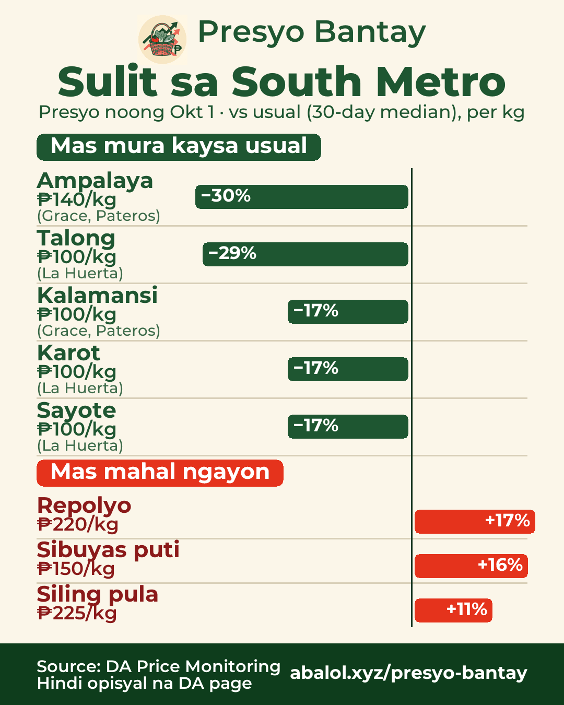
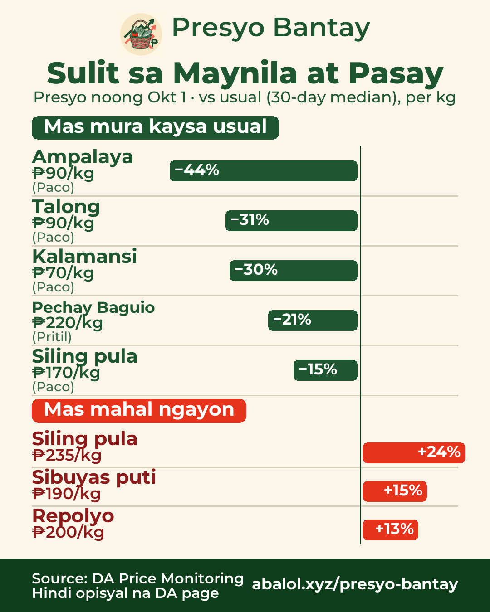
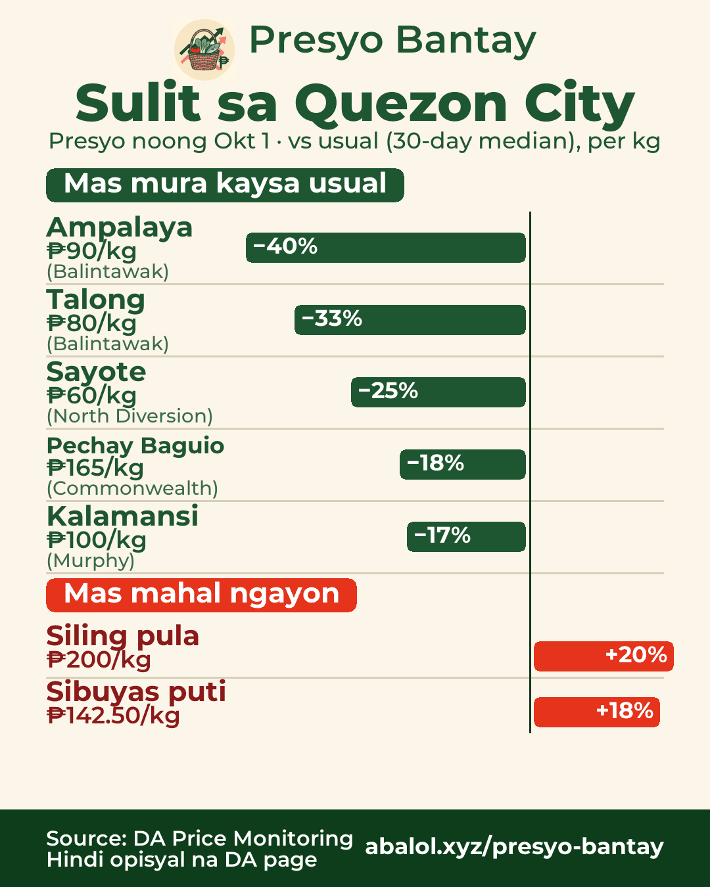
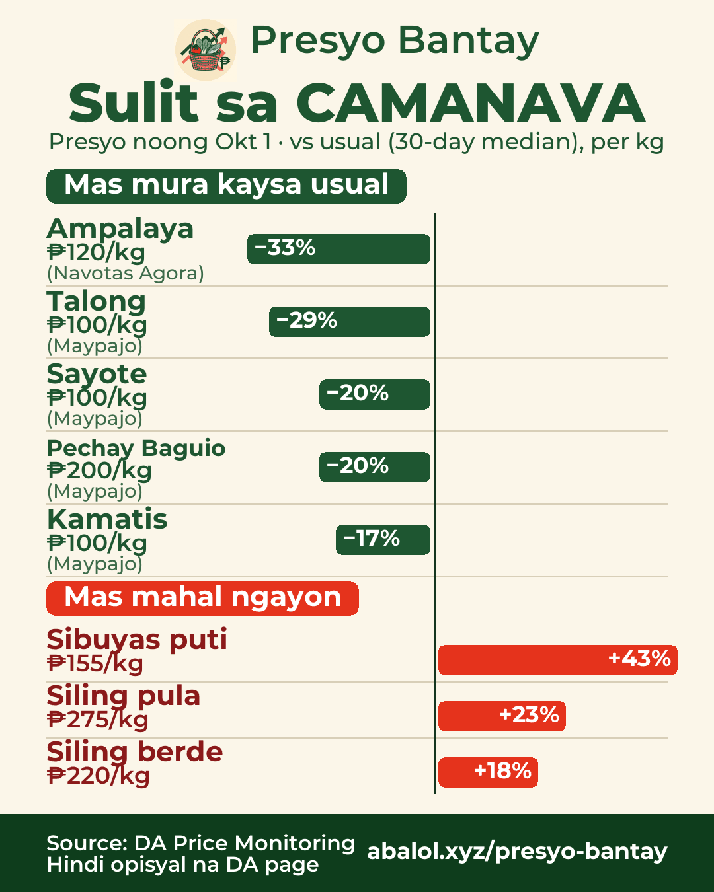
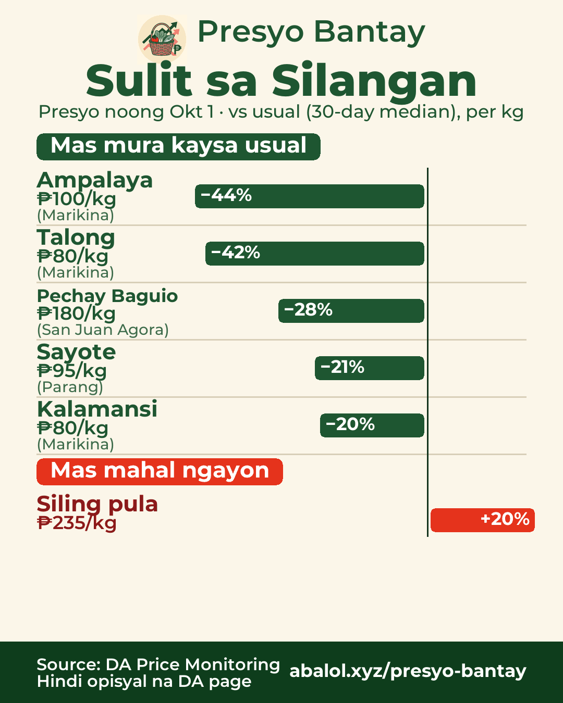

Okt 1, 2026Oct 1, 20262026年10月1日
Sulit sa palengkeMarket deals市場のお買い得
% = kumpara sa usual na presyo (30 araw)% = vs usual price (30-day)% = 30日間のいつもの価格比
South MetroSouth Metro南部（ラス・ピニャス周辺）

🛒 Sulit sa South Metro — presyo noong Okt 1
✅ Mas mura kaysa usual:
- Ampalaya ₱140/kg (−30%) · Grace, Pateros
- Talong ₱100/kg (−29%) · La Huerta
- Kalamansi ₱100/kg (−17%) · Grace, Pateros
- Karot ₱100/kg (−17%) · La Huerta
- Sayote ₱100/kg (−17%) · La Huerta
⚠️ Mas mahal ngayon:
- Repolyo ₱220/kg (+17%)
- Sibuyas puti ₱150/kg (+16%)
- Siling pula ₱225/kg (+11%)
🇬🇧 Deals in South Metro — prices of Oct 1
✅ Ampalaya ₱140 (−30%), Eggplant ₱100 (−29%), Calamansi ₱100 (−17%), Carrots ₱100 (−17%), Chayote ₱100 (−17%)
⚠️ Pricier: Cabbage ₱220 (+17%), White onion ₱150 (+16%), Red chili ₱225 (+11%)
🇯🇵 南部（ラス・ピニャス周辺）のお買い得 — 10/1の価格
✅ ゴーヤ ₱140（−30%）、ナス ₱100（−29%）、カラマンシー ₱100（−17%）、にんじん ₱100（−17%）、サヨテ ₱100（−17%）
⚠️ 高め：キャベツ ₱220（+17%）、白玉ねぎ ₱150（+16%）、赤唐辛子 ₱225（+11%）
Maynila at PasayManila & Pasayマニラ・パサイ

🛒 Sulit sa Maynila at Pasay — presyo noong Okt 1
✅ Mas mura kaysa usual:
- Ampalaya ₱90/kg (−44%) · Paco
- Talong ₱90/kg (−31%) · Paco
- Kalamansi ₱70/kg (−30%) · Paco
- Pechay Baguio ₱220/kg (−21%) · Pritil
- Siling pula ₱170/kg (−15%) · Paco
⚠️ Mas mahal ngayon:
- Siling pula ₱235/kg (+24%)
- Sibuyas puti ₱190/kg (+15%)
- Repolyo ₱200/kg (+13%)
🇬🇧 Deals in Manila & Pasay — prices of Oct 1
✅ Ampalaya ₱90 (−44%), Eggplant ₱90 (−31%), Calamansi ₱70 (−30%), Pechay Baguio ₱220 (−21%), Red chili ₱170 (−15%)
⚠️ Pricier: Red chili ₱235 (+24%), White onion ₱190 (+15%), Cabbage ₱200 (+13%)
🇯🇵 マニラ・パサイのお買い得 — 10/1の価格
✅ ゴーヤ ₱90（−44%）、ナス ₱90（−31%）、カラマンシー ₱70（−30%）、ペチャイ・バギオ ₱220（−21%）、赤唐辛子 ₱170（−15%）
⚠️ 高め：赤唐辛子 ₱235（+24%）、白玉ねぎ ₱190（+15%）、キャベツ ₱200（+13%）
Quezon CityQuezon Cityケソン市

🛒 Sulit sa Quezon City — presyo noong Okt 1
✅ Mas mura kaysa usual:
- Ampalaya ₱90/kg (−40%) · Balintawak
- Talong ₱80/kg (−33%) · Balintawak
- Sayote ₱60/kg (−25%) · North Diversion
- Pechay Baguio ₱165/kg (−18%) · Commonwealth
- Kalamansi ₱100/kg (−17%) · Murphy
⚠️ Mas mahal ngayon:
- Siling pula ₱200/kg (+20%)
- Sibuyas puti ₱142.50/kg (+18%)
🇬🇧 Deals in Quezon City — prices of Oct 1
✅ Ampalaya ₱90 (−40%), Eggplant ₱80 (−33%), Chayote ₱60 (−25%), Pechay Baguio ₱165 (−18%), Calamansi ₱100 (−17%)
⚠️ Pricier: Red chili ₱200 (+20%), White onion ₱142.50 (+18%)
🇯🇵 ケソン市のお買い得 — 10/1の価格
✅ ゴーヤ ₱90（−40%）、ナス ₱80（−33%）、サヨテ ₱60（−25%）、ペチャイ・バギオ ₱165（−18%）、カラマンシー ₱100（−17%）
⚠️ 高め：赤唐辛子 ₱200（+20%）、白玉ねぎ ₱142.50（+18%）
CAMANAVANorth (CAMANAVA)北部（カマナバ）

🛒 Sulit sa CAMANAVA — presyo noong Okt 1
✅ Mas mura kaysa usual:
- Ampalaya ₱120/kg (−33%) · Navotas Agora
- Talong ₱100/kg (−29%) · Maypajo
- Sayote ₱100/kg (−20%) · Maypajo
- Pechay Baguio ₱200/kg (−20%) · Maypajo
- Kamatis ₱100/kg (−17%) · Maypajo
⚠️ Mas mahal ngayon:
- Sibuyas puti ₱155/kg (+43%)
- Siling pula ₱275/kg (+23%)
- Siling berde ₱220/kg (+18%)
🇬🇧 Deals in North (CAMANAVA) — prices of Oct 1
✅ Ampalaya ₱120 (−33%), Eggplant ₱100 (−29%), Chayote ₱100 (−20%), Pechay Baguio ₱200 (−20%), Tomato ₱100 (−17%)
⚠️ Pricier: White onion ₱155 (+43%), Red chili ₱275 (+23%), Green chili ₱220 (+18%)
🇯🇵 北部（カマナバ）のお買い得 — 10/1の価格
✅ ゴーヤ ₱120（−33%）、ナス ₱100（−29%）、サヨテ ₱100（−20%）、ペチャイ・バギオ ₱200（−20%）、トマト ₱100（−17%）
⚠️ 高め：白玉ねぎ ₱155（+43%）、赤唐辛子 ₱275（+23%）、青唐辛子 ₱220（+18%）
SilanganEast Metro東部

🛒 Sulit sa Silangan — presyo noong Okt 1
✅ Mas mura kaysa usual:
- Ampalaya ₱100/kg (−44%) · Marikina
- Talong ₱80/kg (−42%) · Marikina
- Pechay Baguio ₱180/kg (−28%) · San Juan Agora
- Sayote ₱95/kg (−21%) · Parang
- Kalamansi ₱80/kg (−20%) · Marikina
⚠️ Mas mahal ngayon:
- Siling pula ₱235/kg (+20%)
🇬🇧 Deals in East Metro — prices of Oct 1
✅ Ampalaya ₱100 (−44%), Eggplant ₱80 (−42%), Pechay Baguio ₱180 (−28%), Chayote ₱95 (−21%), Calamansi ₱80 (−20%)
⚠️ Pricier: Red chili ₱235 (+20%)
🇯🇵 東部のお買い得 — 10/1の価格
✅ ゴーヤ ₱100（−44%）、ナス ₱80（−42%）、ペチャイ・バギオ ₱180（−28%）、サヨテ ₱95（−21%）、カラマンシー ₱80（−20%）
⚠️ 高め：赤唐辛子 ₱235（+20%）